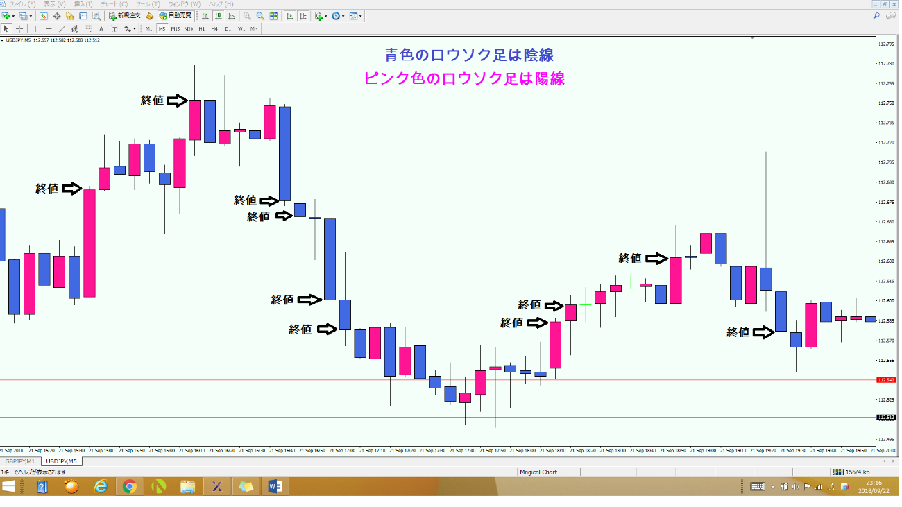
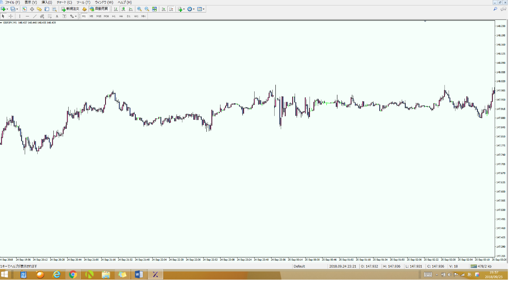

👈👈ギガ速FX_index
👈👈ギガ速FX_index- 🔙 前のページへ戻る
- 🔜 次のページへ進む
FX用語集
FX用語集
１）単純移動平均線（Simple Moving Average）
ある⼀定の期間の価格を加算して期間で割ったものを結んだ平均線をいいます。２）加重移動平均線（Weighted Moving Average）
単純移動平均線よりも直近の価格に⽐重を置いた移動平均線をいいます。３） 指数移動平均線（Exponential Moving Average）
単純移動平均線や加重移動平均線よりも、直近の動きに早く反応するため、トレンドの転換を早めに確認することができます。 これらをチャート上に表⽰すると以下のようになる。

⽶国の伝説のカリスマトレーダー、ウィリアム・ギャンが提唱した理論をいいます。
テクニカル分析で勝つための投資法を２８のルールでまとめています。
01．資⾦の１０分の１以上の損失が出るような取引はしない。
02．ス トップロス・オーダー(逆指値注⽂)を必ず設定する。
03．過剰な売買をせず資⾦配分を守る。
04．トレーリングして利益を損失に変えない。
05．トレンドには逆らわない。
06．迷った時はトレードしない。
07．売買が活発な通貨ペアで取引する。
08．リスクを避けるためリスク分散し投資する。
09．指値注⽂はせず、成り⾏き注⽂で取引する。
10．根拠が無いのに⼿仕舞いしない。
11．トレードで儲けた⿊字分の⼀部は別⼝座に移し管理する。
12．スキャルピングはしない。
13．ナンピンはしない。
14．耐えよ。焦るな。
15．⼩さな利益と⼤きな損失は避ける。
16．ストップロスを設定しこれをキャンセルしない。
17．頻繁な売買は避ける。
18．空売りも積極的に活⽤する。
19．値ごろ感で取引しない。
20．ピラミッディングはレジスタンスやサポートをブレイクしてから⾏う。
21．トレンドが明確な時だけピラミッディングする。
22．両建てをしない。
23．明確な理由なしにポジションを決済しない。
24．利益を得た後は取引量を減らす。
25．相場の天底を推測しない。
26．他⼈の意⾒に従うな。⾃分で研究せよ。
27．損失が出た後は取引量を減らす。
28．間違ったポジションメイク、間違った決済しない。
ジョセフ・グランビルが考案した移動平均線から売買のタイミングを判断する法則をいいます。
具体的には、移動平均線とレートの位置関係によって、買いポイントと売りポイントをそれぞれ４つずつのパターンにまとめたものです。
下記の図はグランビルの法則に則った買いと売りのポイントです。
江⼾時代のコメ相場で活躍した相場師の本間相久（ほんまそうきゅう）によって⾒出された ５つのロウソク⾜のパターンをいいます。
５つのパターンとは、
１）三兵（さんぺい）
・同じ線のロウソク⾜が３本続くパターンのことで、陽線が３本続くと上昇トレンドのサイン、陰線が３本続くと下落トレンドのサインといわれています。
下げ相場が⻑く続き、底値圏に達したところでレンジを形成し、その後陽線が３本続いて発⽣するなどです。
２）三⼭（さんざん）
・３つの⾼値が３つ並んだ⼭のように連なっていて、真ん中の⾼値が特に上に突出しているような形状をいいます。
相場が天井付近に達している時に発⽣するパターンで、中⼼の⼭の底値と底値を結んでできたライン、これをネックラインといいますが、
このネックラインを下割れすると⼀気に下落する可能性が⾼まります。
欧⽶では、ヘッド＆ショルダー（真ん中の⾼値が頭で両サイドの⾼値が肩のように⾒えるので）といわれ、
⽇本でも三尊天井（真ん中の⾼値が如来で両サイドの⾼値が菩薩のよう に⾒えるので）といわれています。
なお、逆に３つの⾼値ではなく、３つの安値から形成される場合は、逆三⼭といわれ、相場が底に達している時に発⽣するパターンです。
逆三⼭は、欧⽶ではトリプルボトム、⽇本では逆三尊と呼ばれています。

⽶国の証券アナリストのチャールズ・ダウが提唱した理論であり、トレンドの動向が始まったら反転が確認されるまで継続するクセを理論化したものをいいます。
ダウ理論は、以下の６つの基本法則が提唱されています。
１． ファンダメンタルもテクニカルも全ての材料は市場価格に織り込まれる。
２． トレンドには３種類ある。
①主要トレンド：１年〜数年のサイクル
②⼆次トレンド：３週間〜３ヶ⽉のサイクル
③⼩トレンド：３週間未満のサイクル
３． 主要トレンドは３段階からなる。買いであれば、
①先⾏期：市場価格が下落し全ての悪材料は折り込み済みと 判断され底値買いをする時期
②追随期：市場価格の上昇を⾒て追随者が買いを⼊れてきた時期
③利⾷い期：価格が⼗分に上昇したところを⾒て、先⾏期に買いを⼊れた投資家が売
って利益を確定する時期
４． ２つの平均は交互に確認されなければならない。
５． トレンドは出来⾼でも確認されなければならない。
６． トレンドは明確な転換シグナルが発⽣するまでは継続する。
FX 取引を⾏う時に選択する通貨と通貨の組み合わせのことをいいます。
・ USDJPY（⽶ドル円）：⽶ドルと⽇本円間の取引
・ EURJPY（ユーロ円）：ユーロと⽇本円間の取引
・ GBPJPY（ポンド円）：ポンドと⽇本円間の取引
・ AUDJPY（豪ドル円：オーストラリアドルと⽇本円間の取引
・ EURUSD（ユーロドル）：ユーロを⽶ドル間の取引
・ GBPUSD（ポンドドル）：ポンドと⽶ドル間の取引
・ AUDUSD（豪ドルドル）：オーストラリアドルと⽶ドル間の取引
・ EURAUD（ユーロ豪ドル）：ユーロとオーストラリアドル間の取引
・ GBPAUD（ポンド豪ドル）：ポンドとオーストラリアドル間の取引
・ EURGBP（ユーロポンド）：ユーロとポンド間の取引

そのローソク⾜の最も⾼い価格と安い価格を⽰すもので、上につくヒゲを「上ヒゲ」、下につくヒゲを「下ヒゲ」と呼びます。
上昇した分のほとんどが下落して無くなると上ヒゲが形成され、その上ヒゲが⻑いほど上昇に対する抵抗が強い＝上げにくいという⾒⽅がとれます。
下落した分のほとんどが上昇して無くなると下ヒゲが形成され、その下ヒゲが⻑いほど下落に対する抵抗が強い＝下げにくいという⾒⽅がとれます。
【上ヒゲ】
【下ヒゲ】
PIPS とは PIP の複数形で PIP とはあるポイントにおけるパーセンテージという意味で、
FX を⾏う際に使われる単位で、 通貨ペアごとに⼩数点の位置が違うので、それをルール化し単位としたものを PIPS といいます。
例えば、⽇本円絡みの通貨ペアであるクロス円は少数点第⼆位の 0.01 が１ PIPS、それ以外の通貨ペアは少数点第四位の 0.0001 が１ PIPS となります。
フィボナッチ数列とは、イタリアの数学者レオナルド・フィボナッチが研究した数列のことであり 、
マーケットの値動きを⾃然現象の⼀部と捉えて、ランダムに⾒える動きの中にフィボナッチ数列に
従う普遍的な秩序を⾒出そうとする分析⽅法をいいます。
フィボナッチを活⽤することにより、レートがどこで下げ⽌まるか、どこまで上昇するかを予想することができる と ⾔われてます。
具体的には、安値と⾼値の２点を起点にしてそこにラインを引いて、その２点の価格差を１００％として、
２３．６％、３８．２％、５０．０％、６１．８％、７６．４％の位置でラインを引くと、フィボナッチ・リトレースメントの形です。
また、フィボナッチ数列を⽤いたテクニカル分析には、フィボナッチ・リトレースメントの他に、
フィボナッチ・エクスパンション 、 フィボナッチ・タイムゾーン 、 フィボナッチ・ファン、 フィボナッチ・アークがあります。
証拠⾦から損失を引いた⾦額が、ある ⼀定の割合の損失がでたときに FX 会社から通知されてくるお知らせをいいます。
いわゆるロスカットで強制的に決済される前の警告通知です。
マージンコールが通知されてきたら、⼀定の期間中に追加の証拠⾦をいれるか、取引を決済する必要があります。
ロシアの MetaQuotesSoftware 社が開発した無料で使える⾼機能 FX トレードチャート のことをいい、 MT4と 呼ばれています。
たくさんのテクニカルインジケーターを⾃由に組み合わせることができ、世界で最も多く使われている FX トレードチャートです。
※この FX ⽤語集で使⽤されているチャートは全て メタトレーダーのチャートです。